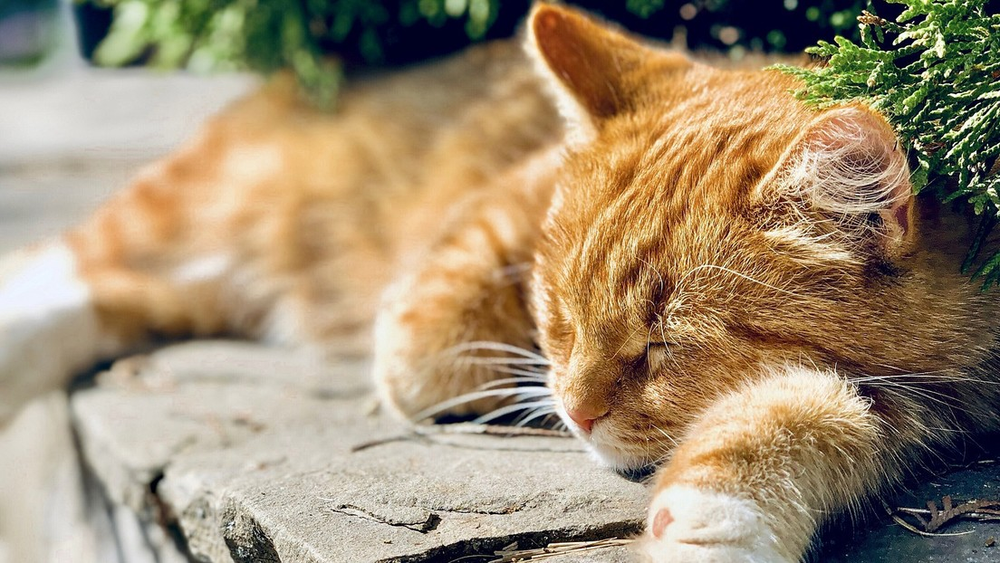
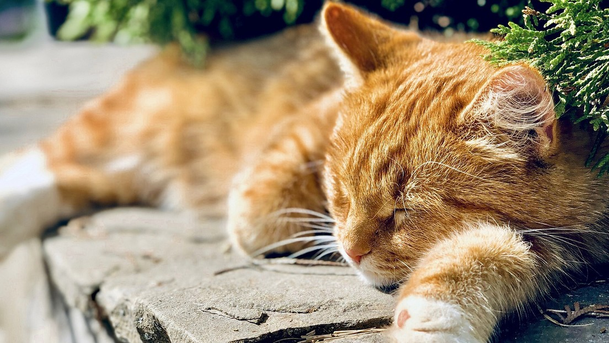
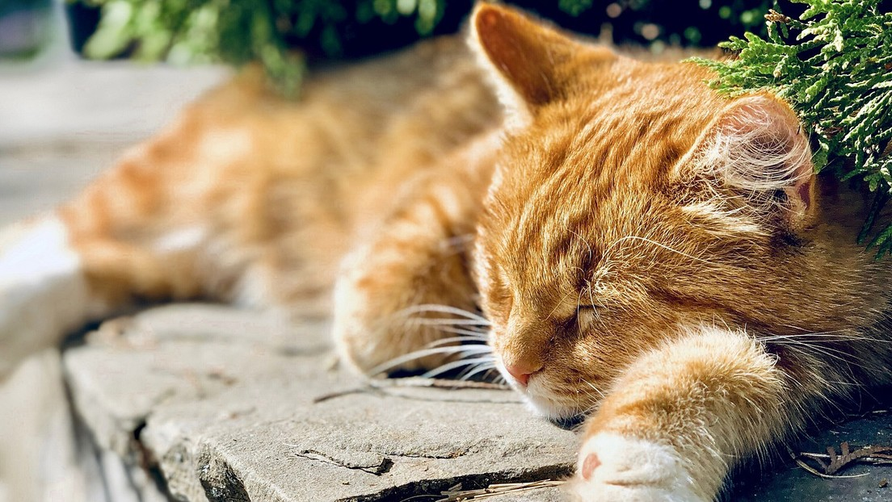

El gato doméstico, llamado más comúnmente gato, y de forma coloquial minino, michino, michi, micho, mizo, miz morroño o morrongo, y algunos nombres más, es un mamífero carnívoro de la familia Felidae. Es una subespecie domesticada por la convivencia con el ser humano.
El nombre actual en muchas lenguas proviene del latín vulgar catus. Irónicamente, catus aludía a los gatos salvajes, mientras que los gatos domésticos, en latín, eran llamados felis.
Como resultado de mutaciones genéticas, cruzamiento y selección artificial, hay numerosas razas. Algunas, como la raza sphynx o la peterbald están desprovistas de pelo; otras carecen de cola, como los gatos de la raza manx, y algunas tienen coloraciones atípicas, como los llamados gatos azules.
El gato se comunica a través de vocalizaciones. Las más populares son su característico maullido y el ronroneo, pero puede aullar, gemir, gruñir y bufar. Los gatos desarrollaron el maullido con la única finalidad de poder comunicarse con el ser humano. Además, adopta poses o expresiones que informan, a sus congéneres, sus enemigos o sus cuidadores, de su ánimo o sus intenciones.
